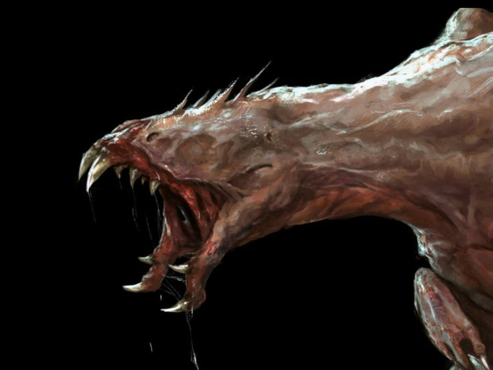

Torturados

São criaturas que abraçaram por completo o caos da realidade, o caos que causa sofrimento, dor e
tristeza. Quando alguém é submetido a experiências horríveis e insuportáveis, sua essência se quebra.
Nesse momento, há apenas dois caminhos: desistir e morrer, ou desistir de si mesmo e transformar-se
em um Torturado.
O Torturado é a manifestação física do último sentimento que dominou a pessoa antes da transformação.
Pode ser ódio, tristeza, obsessão ou qualquer emoção extrema. Essas entidades não necessitam de
alimento ou água, mas sobrevivem do sangue, característica que interessantemente os aproxima dos
vampiros.
Os Torturados são caçados dentro dos muros, por isso evitam de viver dentro deles e moram do lado de
fora dos muros.
Torturados — Criação de Personagem
Características
Role 1d4 para cada uma das opções (Força, Agilidade, Inteligência, Conhecimento, Mental).
A menor das 5 fica negativada.
Perícias
Role 1d6 para cada uma. Depois role 1d4+1 para ver quantas Perícias você vai negativar.
Deformação LVL 1
Todo objeto pequeno que o usuário tocar ele consegue distorcer sua forma.
Teste: role 1d10
0 – 5
Não distorce
6 – 10
Distorce